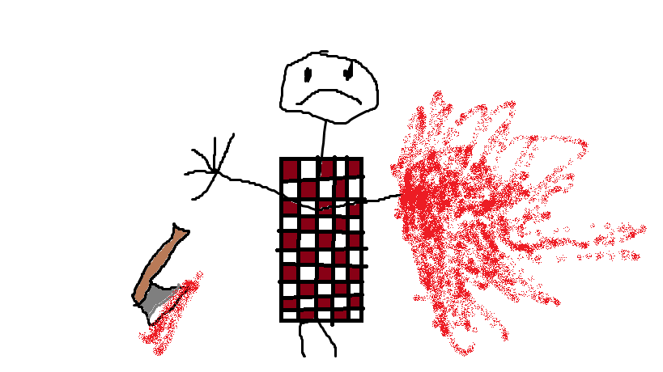

Meet Bob.
Bob is a 32-year-old former lumberjack who lost his right hand during an accident at the saw mill. He is no longer able to work as a lumberjack, and the simplest of daily tasks have become difficult with only one hand. Bob is eager to regain his ability to swing his axe and complete daily tasks with ease. Solutions such as adaptive cutlery, voice-activated smart home controls, eye-tracking devices for computer access, and prosthetic hands could greatly increase his ability to interact with his environment.
